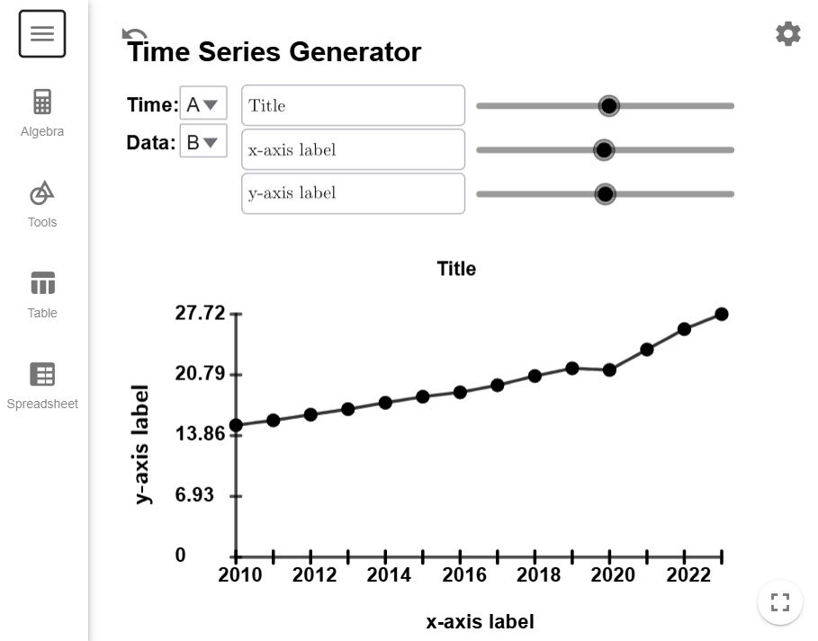
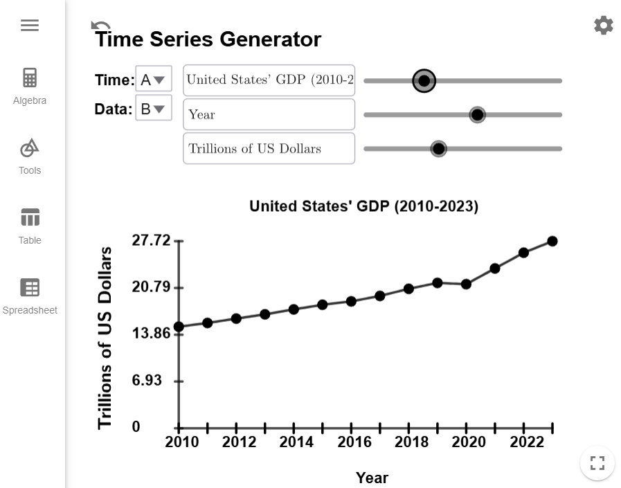

Constructing Time Series Plots
Time series plots are essential tools in statistics for visualizing data points collected over time. By highlighting patterns and variations, these plots provide valuable insights for decision-making in fields like economics, finance, weather prediction, and performance monitoring.
Time Series Plots
How do I make a Time Series Plot?
- Label the \(x\)-axis with the range of days, months, or years, and label the \(y\)-axis with the units of the data. Make sure to title your graph as well.
- Plot each data point as \((x,y)=(\text{{time}}, \text{{data}})\).
- Draw straight line segments between consecutive points to connect them.
According to the European Commission, "Gross domestic product (GDP) is the
most common measure for the size of an economy, and it measures the value of total final output
of goods and services produced by that economy in a certain period of time."
The following data from the World Bank Group describes the U.S. GDP (in trillions of dollars) for
each year from 2010 to 2023. Use this data to construct a time series plot.
| Year | GDP | Year | GDP |
|---|---|---|---|
| 2010 | 15.05 | 2017 | 19.61 |
| 2011 | 15.60 | 2018 | 20.66 |
| 2012 | 16.25 | 2019 | 21.54 |
| 2013 | 16.88 | 2020 | 21.35 |
| 2014 | 17.61 | 2021 | 23.68 |
| 2015 | 18.30 | 2022 | 26.01 |
| 2016 | 18.80 | 2023 | 27.72 |
Solution
First, copy and paste the data into the Time Series Generator Tool. The data you copied should already be defaulted so that the years are in column A and the GDP is in column B, and the tool should look like this after you load the data.

All we have to do is update the title and axes labels, and we are done. Remember you can adjust the sliders to reposition the title and labels, if you so desire.

$$\tag*{\(\blacksquare\)}$$
The most important part of time series plots are being able to interpret them. The next example asks questions about the plot we just created.
Example 2
Use the time series plot we created in to answer the following questions.- In what year did the GPD grow the slowest?
- In what year did the GPD grow the fastest?
- The only year we had a decrease in GPD was from 2019 to 2020. What historical event explains the drop in GDP?
Solution
- We are looking for the line segment that has the most horizontal since its slope (which
measure the yearly change) will be closest to zero. In this case, it is the line
segment from 2015 to 2016 is the most horizontal, and it was not easy to see at
all. (I had to enlarge the graph to figure it
out.)
Note: We don't want 2019-2020 since the GDP didn't grow that year, we actually lost some GDP that year. - We are looking for the line that is most vertical since this line segment will have the largest slope, which is from 2020 to 2021.
- The COVID pandemic hit in 2020 since the pandemic disrupted many of the systems we relied on to keep the economy running.
$$\tag*{\(\blacksquare\)}$$